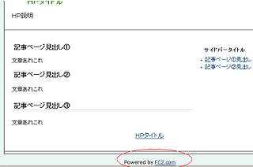

ＦＣ２ホームページを作成するときはどうやら無料でできちゃうようなんです。現在のところ、ＦＣ２ホームページの無料スペースをレンタルしてもちいさな powered by 的な広告しかついてません。

さらに、たいていの無料ホームページでは成人向けコンテンツＮＧのところが多いですが、ＦＣ２ホームページではそれも可能ということなんです。
これが同じ無料のホームページスペースでも、ヤフージオシティーズの場合、アクセス数は多いかと思いますが、上部にけっこう目立つバナーが自動的に挿入されてしまうのが痛いところです。
こんなぐあいにＦＣ２の無料ホームページレンタルはコンテンツ内容に自由度があるという点、無料という点、さらに目立った広告もつかないという点で利点が多いように思うんです。